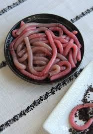

Worm Dinner!

A meal for only the most extreme palettes. This angelic meal is filled to the brim with wriggling, writhing worms!
Ingredients
- 1/2 pound of worms
- 1 tbsp of salt (optional if you want the worms to suffer before you engulf them)
Instructions
- Pour the worms into a large bowl
- (OPTIONAL) Mix in the tbsp of salt